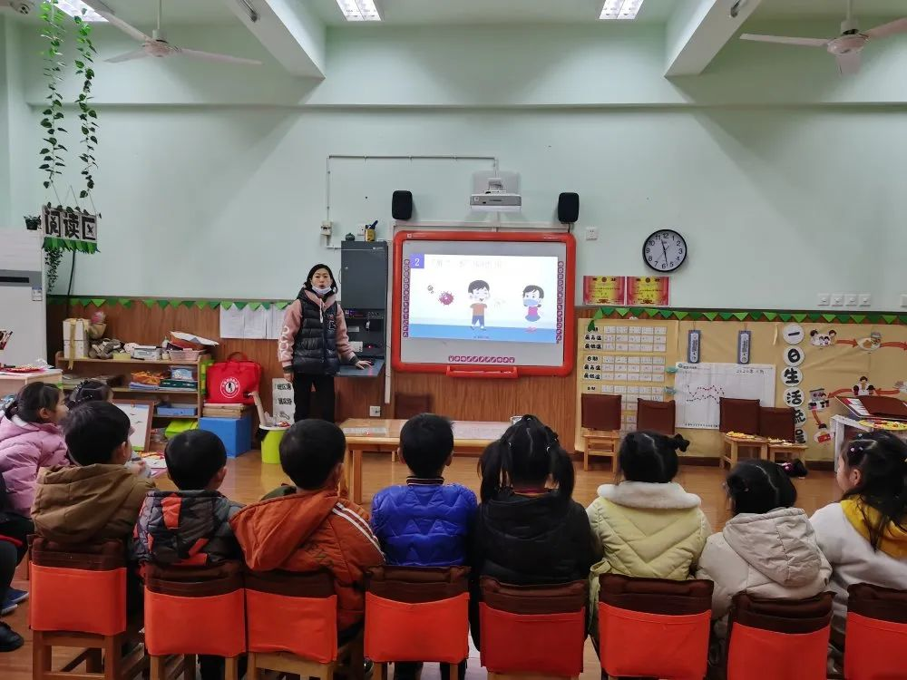
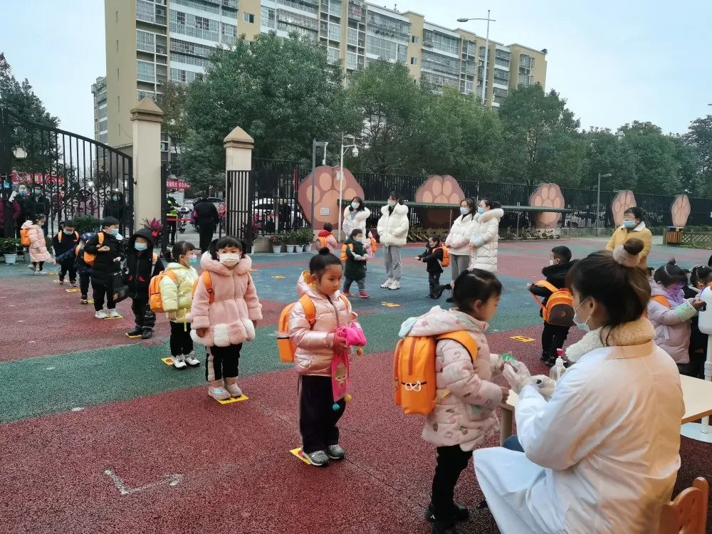
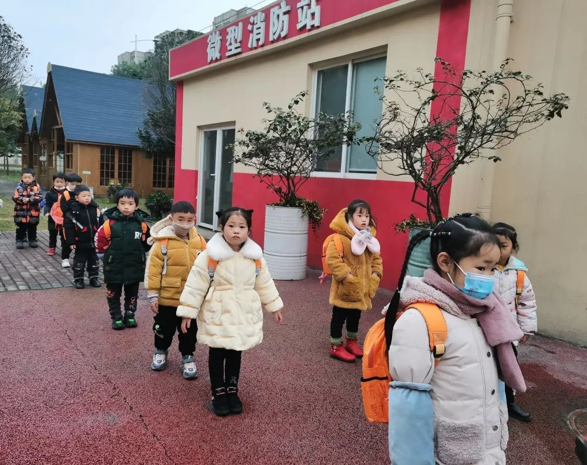
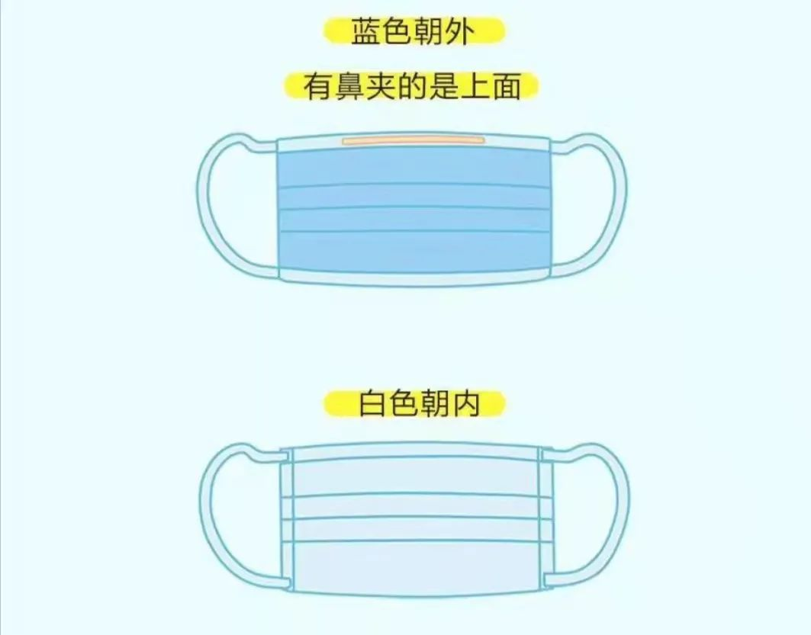
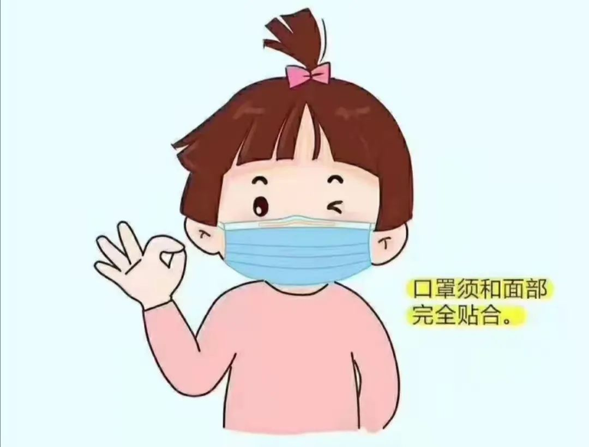
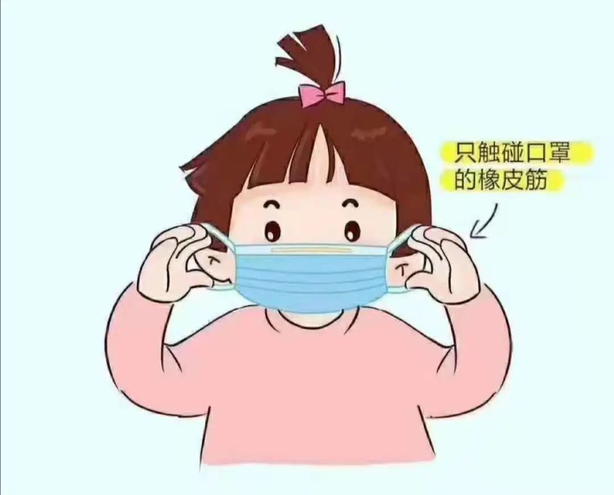
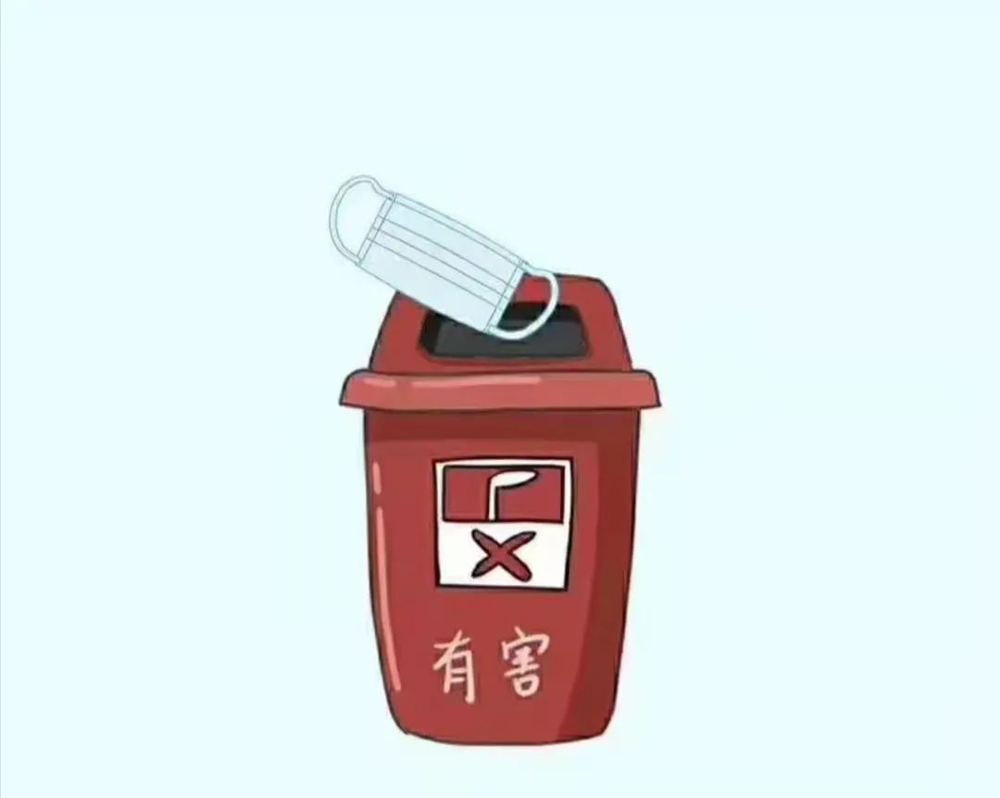
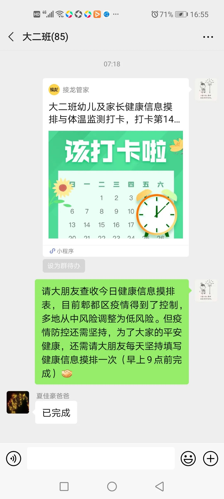
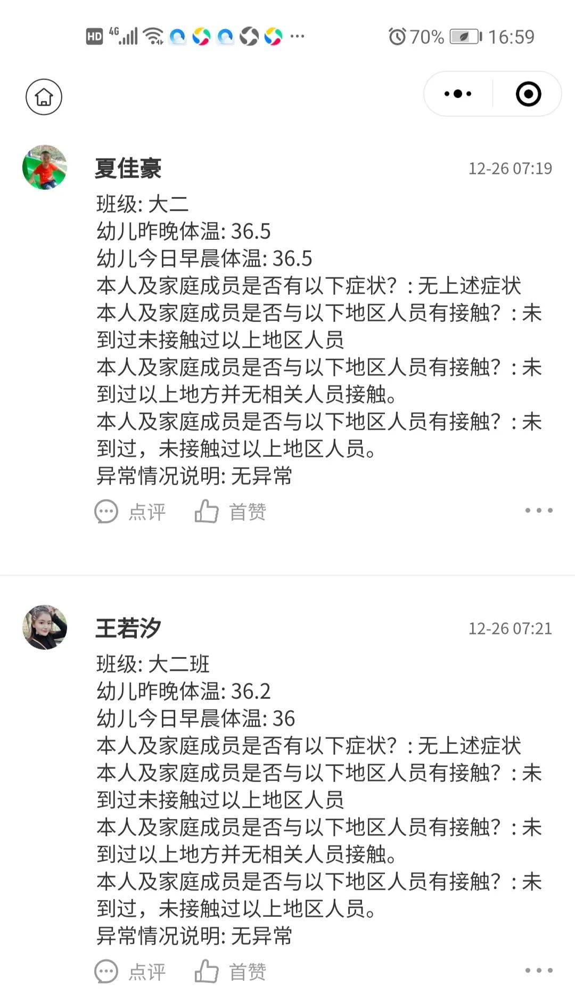

大二班 成都市双流区九江万家幼儿园 2020-12-29 19:25 发表于四川
抗击疫情
FIGHT
安全防疫“一米线 ”
守护安全与健康

持续落实常态化疫情防控措施

当前疫情虽然得到了较好的控制，成都市中风险地区目前仅剩1个：郫都区三道堰镇八步桥社区八组安置点。为了大家的生命健康安全，我们还需继续落实常态化疫情防控措施。
1.教育孩子尽量避免外出，确需外出要正确佩戴口罩，做好自我防护措施，在公共场所不触摸公共物品，勤洗手;关注孩子体温变化，如有变化及时就医并按幼儿园要求做好体温检测和上报工作。
2.面对疫情，帮助孩子科普疫情相关知识，用科学、理性的态度来看待疫情的产生和传播，帮助孩子树立战胜疫情的信心。
抗疫“一米线”共筑健康防线！
近距离的飞沫传播是新型冠状病毒的主要传播途径，我们开展了集体教学活动，引导幼儿 了解“一米”线在我们幼儿园的作用，提高自我保护意识。遵守“一米”线的规则，注意日常活动中讲卫生并与同伴保持安全距离。从点滴小事做起养成文明习惯，共同筑牢一米健康防线。






科学佩戴口罩
疫情常态化防控期间如何佩戴口罩
秋末冬至，既是呼吸道传染病的高发季节，又存在新冠肺炎疫情与呼吸道传染病流行叠加的风险，科学佩戴口罩依然是秋冬季呼吸道传染病幼儿个人防护的重要手段，因此我们一定要引导幼儿科学佩戴口罩！






取下口罩的方法，你get了吗？



持续做好信息摸排




END
图文：大二班
排版：胡兴伟
扫 描 二 维 码 关 注 我 们

阅读 158
分享 收藏
18 16